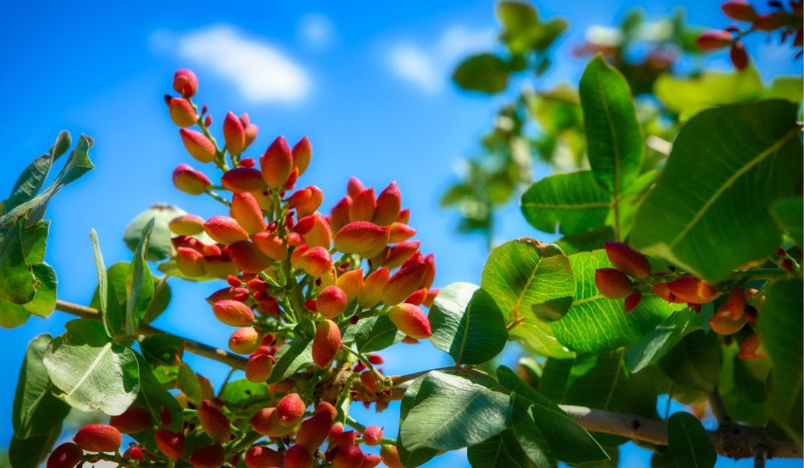
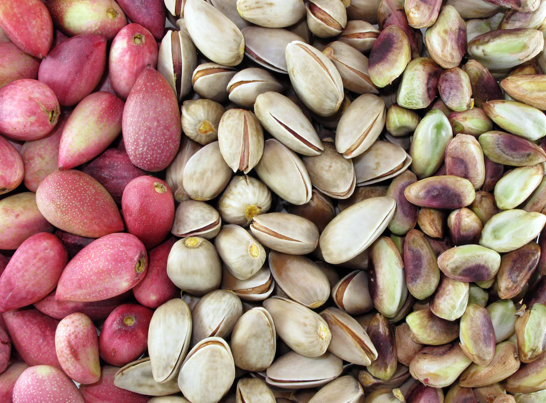
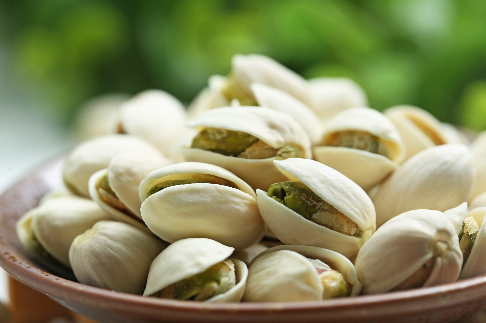
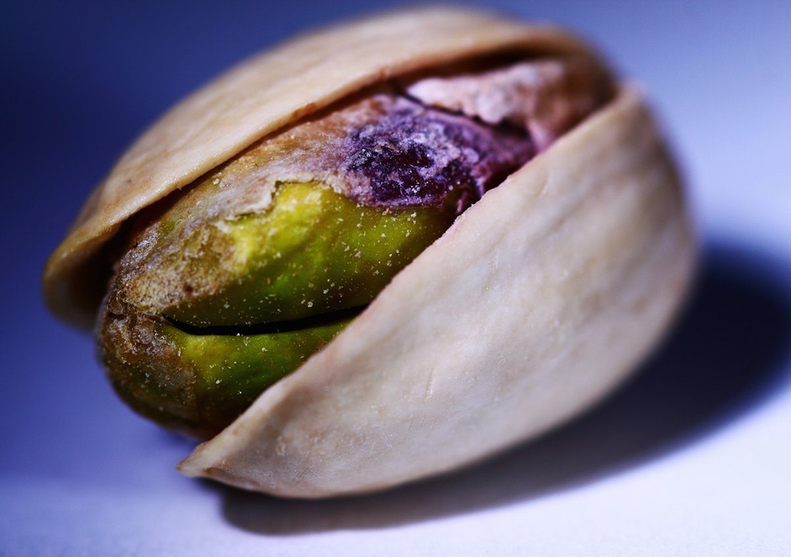

Welcome to Pistachio's Home!
A tiny but mighty nut that has been cherished for thousands of years.
Originary from the ancient landscapes of the Middle East, pistachios have traveled through time and across cultures to become a beloved snack and versatile ingredient in kitchens worldwide.
Pistachios are not only celebrated for their distinctive, rich flavor and satisfying crunch but also for their remarkable nutritional benefits.
Packed with essential vitamins, minerals, and heart-healthy fats, these little green gems are a powerhouse of goodness.
Whether you're a culinary enthusiast looking to elevate your dishes, a health-conscious individual seeking a nutritious snack, or simply a pistachio aficionado, our website is your ultimate destination for all things pistachio.
Join us as we explore the fascinating history, health benefits, and delicious recipes that make pistachios a true delight.



